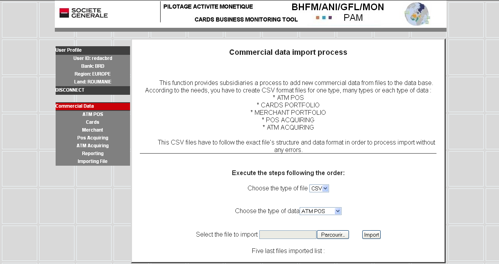

Table of contents Close window
This function has to be used by subsidiaries able to process data extract program from their information system and generate cards business data inside CSV files. These files have to be consistent with the standard format in order to avoid errors.

The records of these files have to enclosed correct value of year, semester and subsidiary acronym. These three fields are used to arrange data in the database.
The import function reads each record and checks the type of data. Every error is added in real time in a list which is displayed on the users screen.
Procedure:
Click on Importing file in the menu.
« Commercial import process » screen is displayed. Note: at the bottom of the screen, the five last importation actions are listed showing the date, and the name of the file previously imported.
Follow the process:
File format choice: currently the only file format available is CSV format.
Select the cards business information type to be imported in the database: for example « POS Acquiring ».
Select a CSV file to be used for this importation action.
Check in the list at the bottom of screen that this file hasn’t been already used and imported. There is no redundant data checking function.
Note the number of records to be added in the database: number of cards, number of acquisition channels for merchant’s contracts for example.
Click on the button « IMPORT »
The program read and check each record , display the following message showing the number of wrong records and the list of errors :
At the end of this list, the program gives the number of compliant records which will be copied to the database and proposes two buttons « Confirm » and « Abort »:
Analyze the list of errors :
If the list is empty or only returns errors regarding the lines of field titles, and if the expected number of records is equal to that expected, confirm the import of the file by clicking on the button "Confirm"
If the list is too important and contains many errors: the number of records to import is zero or is lower than expected, then the file doesn’t follow the standard format. Don’t confirm the import and click on the button "Abort". In the list of import actions, your import will be annotated with the word ABORT. Check the contents and the format of the file to import, and then start again.
If you confirm, the database is updated. Check in the table if the content has changed.
If data in the tables don’t correspond to what you expected, contact BHFM to evaluate the errors and decide what action to take.